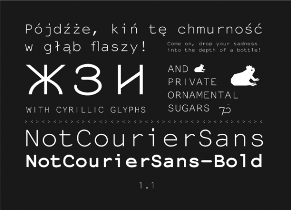

NotCourierSans is a re-interpretation of Nimbus Mono whose design began in Wroclaw at the occasion of the Libre Graphics Meeting 2008.
For more detailed information explore the files included in the font package (FONTLOG.txt) or go through the Font Info section (FONTLOG and Comment) in the font (open the font file in FontForge and go to Font Info in the Element menu).
The 1.1 version has been expanded by a work on cyrillic glyphs by Paulo Silva aka nitrofurano.
NotCourierSans 1.1 contains 2 ornamental glyphs encoded in the private use characters:
- in U+E000, the OSP frog mascot
- in U+E001, the 75 ligature added during an OSP workshop in Le 75, École Supérieure des Arts de l’Image, on Wednesday 17 December.
These sugars are accessible through the Ornament Open Type features.
You can test it in Fontmatrix.